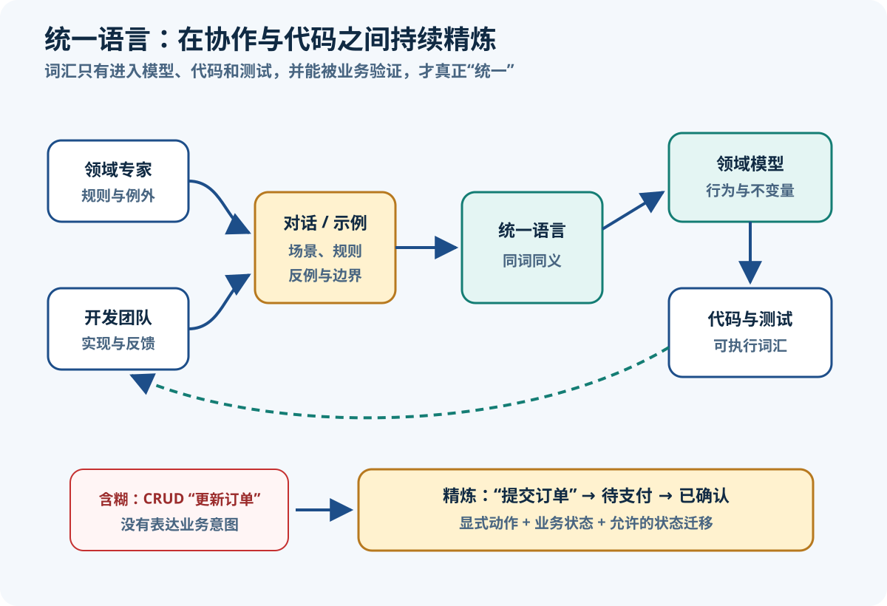

DDD 基础概念与统一语言
整理日期：2026-08-11；资料检索日期：2026-08-11
目标：把“领域、模型、语言、代码”分清，再让四者通过业务反馈保持一致。
核心结论
- 领域是要理解和支持的业务范围；领域模型是为解决某类问题而做的选择性抽象；统一语言是表达并检验该模型的共同语言；代码是模型的一种可执行表达。
- 领域模型不是数据库镜像，也不追求收录现实中的一切；它只保留当前目的所需的概念、关系、规则和行为。
- 统一语言不只是术语表。它必须进入对话、业务示例、验收测试与代码，并在发现歧义后被修订。
- 同一现实事物可以在不同上下文中拥有不同且都有效的模型；追求全局唯一“Customer”或“Order”常会抹平关键差异。
- 有业务意义的动作比通用 setter 更能承载语言与不变量，例如
submit()明确表达一次受规则约束的状态转换。
来源定义：Eric Evans 的 DDD Reference将统一语言与模型驱动设计作为核心模式；Fowler 的 DDD 概览强调模型应进入软件并随产品生命周期演化。工程解释：Java 类名相同并不代表模型一致，判断依据是它们表达的业务含义和允许的行为是否相同。
领域与模型
Domain（领域）是组织开展的活动以及其中的业务知识，例如电商中的定价、下单、履约和结算。它先于软件存在；API、表和类只是我们为支持它而构造的方案。Subdomain（子域）是对问题空间的进一步分析：把较大的领域拆成相对内聚的业务问题区域。本篇只预告这个概念，完整分类与取舍放在战略设计篇。
Domain Model（领域模型）是团队为特定目的形成的抽象系统。它会舍弃无关细节，突出需要做出决策的概念、关系、状态和规则。因此“订单表有 24 列”是存储描述，“草稿订单确认价格后才能提交”才是模型中的业务知识。Martin Fowler 的 Domain Model 模式也把领域模型描述为同时包含数据与行为的对象模型。
Model-Driven Design（模型驱动设计）要求设计中的核心概念与代码表达相连：对模型的洞见应能改变命名、对象职责和测试，代码暴露的问题也应反馈到模型。模型不是一次性交付的 UML 图。
来源定义：大型系统不必强求一个全局模型。Fowler 的限界上下文说明指出，不同团队或业务区域会给同一个词赋予不同含义，因此需要在明确边界内保持模型一致。比如销售模型中的“客户”关注购买资格，物流模型中的“收件人”关注地址和交付条件；两种选择可同时有效。
统一语言
来源定义：Ubiquitous Language 是开发者和领域专家围绕模型共同建立的严格语言。Fowler 的原文说明强调语言要在与领域专家的对话中接受检验，并随理解增长而演化。它“无处不在”的范围包括日常讨论、场景示例、需求规则、测试名、类与方法，而不只是 Wiki 中的一张词汇表。

图可用文字等价表达为：团队先在业务对话中提出术语，经由具体示例与不变量消除歧义，形成领域模型；模型进入测试和代码后产生可执行反馈，运行结果与新业务认知再返回对话，促使团队修订语言和模型。任何一环长期断开，词汇表、文档与实现就会漂移。
实践建议：记录“被禁止的同义词”和上下文。例如团队确定“提交订单”表示从草稿进入待确认状态后，就不要在接口、测试和会议中交替使用“创建完成”“保存订单”“下单成功”；若业务确实区分这些动作，应给每个动作单独定义。
问题空间与解决方案空间
| 观察角度 | 业务问题概念 | 软件模型选择 | 有效证据 | 典型错误 |
|---|---|---|---|---|
| 范围 | 领域与子域：业务在解决哪些不同问题？ | 限界上下文：哪套模型和语言在何处有效？ | 参与者、决策、变化原因、术语差异 | 把一个子域机械等同于一个微服务 |
| 概念 | 报价、订单、承运、退款等现实业务概念 | 实体、值对象、策略、状态等表达方式 | 成功例、反例、边界例和领域专家反馈 | 看到名词就创建类 |
| 规则 | “什么时候允许提交或取消？” | 方法、对象协作、不变量与精确失败 | 可执行测试与生产反馈 | 只做字段非空校验，忽略业务状态转换 |
| 数据 | 业务需要记住哪些事实？ | 对象结构、持久化模型、映射策略 | 业务查询、事务和一致性要求 | 先按现有表结构决定领域对象 |
工程解释：子域属于问题空间分析，描述业务问题的一部分；限界上下文属于解决方案与建模边界，规定某套模型和语言的有效范围。两者常有关联，但不是天然一一对应。Microsoft Learn 的领域分析流程先分析业务功能，再定义上下文和模型，提供了同样的顺序证据。这里仍不展开核心、支撑、通用子域或上下文映射的完整目录。
订单示例
含混的 CRUD 需求通常是：“创建订单，后面可以更新订单。”它没有说明谁能做什么、何时允许、状态如何转换、失败意味着什么。通过追问具体场景，可以形成更精确的语言：
| 含混表达 | 精确业务动作/状态 | 需要确认的规则 |
|---|---|---|
| 创建订单 | 创建草稿订单 | 草稿是否必须已有客户和至少一个订单项？ |
| 更新价格 | 确认价格 | 谁有定价权？确认后是否还允许改价？ |
| 更新状态 | 提交订单、取消订单 | 哪些来源状态允许转换？失败原因是什么？ |
| 状态字段 | OrderStatus.DRAFT、SUBMITTED、CANCELLED | 每个状态代表的业务承诺是什么？ |
较弱的 setter 模型（Java 21）
import java.math.BigDecimal;
// Java 21：对象不能阻止任意状态跳转，业务规则只能散落在调用者中。
public final class Order {
private String status;
private BigDecimal total;
public void setStatus(String status) {
this.status = status;
}
public void setTotal(BigDecimal total) {
this.total = total;
}
}
// 任意调用者都可能绕过“只有草稿可提交”的规则：
order.setStatus("SUBMITTED");问题不是 setter 语法本身，而是模型没有表达“提交”这一业务动作，也没有拥有守护状态转换的责任。字符串还允许拼写错误或未定义状态。
行为式模型（Java 21）
import java.util.Objects;
import java.util.UUID;
// Java 21：示例只演示“草稿才能提交”的不变量，不是完整聚合实现。
public final class Order {
private final OrderId id;
private OrderStatus status;
private Order(OrderId id) {
this.id = id;
this.status = OrderStatus.DRAFT;
}
public static Order draft(OrderId id) {
return new Order(id);
}
public void submit() {
if (status != OrderStatus.DRAFT) {
throw new OrderCannotBeSubmitted(id, status);
}
status = OrderStatus.SUBMITTED;
}
public OrderStatus status() {
return status;
}
}
enum OrderStatus { DRAFT, SUBMITTED, CANCELLED }
record OrderId(UUID value) {
OrderId {
Objects.requireNonNull(value, "订单编号不能为空");
}
}
final class OrderCannotBeSubmitted extends IllegalStateException {
OrderCannotBeSubmitted(OrderId id, OrderStatus actualStatus) {
super("订单 %s 当前状态为 %s，只有草稿订单可以提交"
.formatted(id.value(), actualStatus));
}
}该版本用 submit() 对齐业务动作，用枚举限制合法状态，用值对象表达订单标识，并在违反不变量时给出包含订单和实际状态的精确失败。示例刻意省略订单项、金额、并发、持久化与事件，不应被误认为完整聚合设计。
工程解释：Microsoft Learn 的领域模型实现说明虽然使用 C#，但其中“实体同时拥有数据与行为、方法守护规则”的原则可直接映射到普通 Java 领域类型；同一资料也提醒简单 CRUD 未必值得引入复杂领域模型。
语言到代码
命名规则
- 类和值对象使用业务名词：
Order、OrderId，避免OrderData、CommonEntity等弱语义名称。 - 方法使用业务动作：
submit()、confirmPrice()、cancel(reason)，避免用update()掩盖多种规则。 - 状态和失败使用领域词：
DRAFT、OrderCannotBeSubmitted；失败应告诉调用者违反了哪条业务前置条件。 - 同一词在不同上下文含义不同时，用边界隔离模型，不用一个“超级枚举”统一全部含义。
- 领域类型保持普通 Java，不在其中放 Spring MVC、JPA 或消息框架注解；适配器负责技术转换。
最小规则测试（Java 21）
import static org.junit.jupiter.api.Assertions.assertEquals;
import static org.junit.jupiter.api.Assertions.assertThrows;
import static org.junit.jupiter.api.Assertions.assertTrue;
import java.util.UUID;
import org.junit.jupiter.api.Test;
@Test
void 只有草稿订单可以提交() {
var order = Order.draft(new OrderId(UUID.randomUUID()));
order.submit();
var failure = assertThrows(OrderCannotBeSubmitted.class, order::submit);
assertEquals(OrderStatus.SUBMITTED, order.status());
assertTrue(failure.getMessage().contains("只有草稿订单可以提交"));
}实践建议：测试名可以用团队最自然的语言，代码标识符则保持一致、可检索的英文领域词。重点是测试、代码和业务示例表达同一条规则，而不是把每句话逐字翻译成类。
常见误区
| 误区 | 为什么有害 | 修正动作 |
|---|---|---|
| 统一语言只是词汇表 | 词汇不进入对话、测试和代码，很快就与实现漂移 | 用真实场景朗读术语，并同步修改示例、测试与代码 |
| 领域模型等于数据库表 | 表结构优化存储，无法天然表达行为、不变量和上下文含义 | 先从决策规则建模，再单独设计持久化映射 |
| 技术术语主导业务对话 | “调接口、改字段、发 MQ”遮蔽了谁为什么做出何种业务承诺 | 先复述业务动作和结果，再讨论技术机制 |
| 过早建立万能模型 | 同名词在不同场景的差异被折中为大量可空字段和分支 | 明确语言有效边界，允许多个目的不同的模型 |
| 每个名词都变成类 | 语言只是线索，不是自动代码生成规则；会产生无行为对象和伪抽象 | 要求每个类型有身份、值语义、规则或协作职责的证据 |
Fowler 对贫血领域模型的分析指出，只含数据而把全部领域行为移到服务中的对象会失去领域模型的主要收益；但这不是要求每个系统都做富模型，复杂度低的场景仍可选择事务脚本或简单 CRUD。
练习与验收
输入：一句需求——“客服可以更新订单，仓库出库后不允许随便改。”
- 邀请客服、仓库或其代理角色，各给出一个允许和一个拒绝修改的具体例子。
- 圈出含混词：“更新”“出库”“随便改”；询问它们在何时、由谁、对哪些信息生效。
- 把 CRUD 改写为动作与状态，例如“更正收货地址”“锁定配送信息”“订单已交接承运商”。
- 写出至少三条 Given–When–Then 示例和两条不变量。
- 设计 Java 方法名、状态和值对象，再让参与者用自然语言复述代码代表的规则。
输出：一页语言清单（含定义、反例和边界）、状态转换表、三条可执行测试草案、一个不依赖 Spring 的领域类型草图。
自检：每个动作是否有明确发起者、前置状态和失败原因？同一个词在所有示例中含义是否一致？代码是否能阻止非法转换？模型是否仍依赖表名、接口路径或框架注解才能解释？若业务人员否定某个词，团队是否愿意同步修改对话、测试和代码？全部能回答，才算完成本节。
本篇小结
你现在应能把含混的“更新订单”拆成有发起者、前置状态、业务动作、不变量和精确失败的语言，并让这套语言同时出现在示例、测试和普通 Java 领域对象中。下一步请实际完成语言工作坊：先让业务人员校正术语，再把确认过的规则写成测试与行为方法；随后进入战略设计篇，判断哪些词义差异需要由模型边界隔离。
参考资料
资料检索于 2026-08-11。以下使用作者原站与官方工程文档，正文为自行归纳。
- Eric Evans / Domain Language：DDD Reference — DDD 原著模式与定义的作者参考入口。
- Eric Evans：Domain-Driven Design Reference（PDF） — 统一语言、模型驱动设计和上下文边界的原始摘要。
- Martin Fowler：Ubiquitous Language — 共同语言、对话检验和持续演化。
- Martin Fowler：Bounded Context — 多个模型的合理性及语言边界。
- Martin Fowler：Domain Model — 同时容纳数据与行为的领域对象模型。
- Martin Fowler：Anemic Domain Model — 只有 getter/setter、行为外移的风险。
- Microsoft Learn：Use domain analysis to model microservices — 从问题分析到上下文与模型的工程步骤。
- Microsoft Learn：Design a microservice domain model — 行为实体、聚合一致性与简单 CRUD 的适用边界。
DDD 七篇专题导航
- DDD 架构总览与学习路线
- DDD 基础概念与统一语言（本篇）
- DDD 战略设计与限界上下文
- DDD 战术设计与领域模型
- DDD 分层架构模式对比
- DDD 订单领域 Java 实践
- DDD 落地演进与常见误区